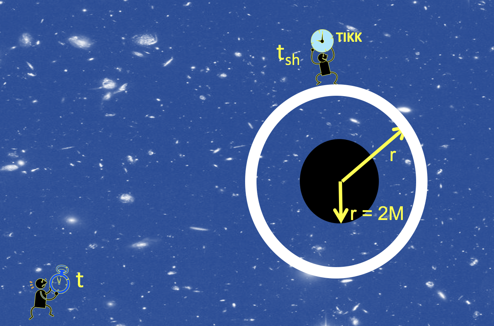

Forrige side🙂 🙁3 observatørerPADLET

$$\Delta t_\mathrm{sh}=\sqrt{\sst}\Delta t$$ Ja hvor går tiden fortere? Anta at klokka til skallobservatøren tikker en gang i sekundet. Vil langt-vekkobservatøren med kikkert måle på sin klokke at det tar kortere eller lengere tid enn 1 sekund mellom hvert tikk på skallobservatørens klokke? Kortere!Lengere!
Du lurer ikke meg, det blir selvfølgelig like lenge!